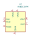
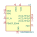

| Symbol |
Description |

AD8313xRM | Description: 100 MHz to 2.5 GHz, 80 dB Logarithmic Detector / Controller, MSOP-8
Keys: RF LOG POWER DETECTOR
Datasheet: https://www.analog.com/media/en/technical-documentation/data-sheets/AD8313.pdf |
ADL5541 | Description: 20-6000MHz RF/IF +15dB gain block, LFCSP-8
Keys: RF GAIN BLOCK
Datasheet: https://www.analog.com/media/en/technical-documentation/data-sheets/ADL5541.pdf |
ADL5542 | Description: 20-6000MHz RF/IF +20dB gain block, LFCSP-8
Keys: RF GAIN BLOCK
Datasheet: https://www.analog.com/media/en/technical-documentation/data-sheets/ADL5542.pdf |
ADL5610 | Description: 30-6000MHz RF/IF +18.4dB gain block, SOT-89
Keys: RF GAIN BLOCK
Datasheet: https://www.analog.com/media/en/technical-documentation/data-sheets/ADL5610.pdf |
BGA2800 | Description: MMIC wideband amplifier, DC-2.2GHz, +20.2dB @ 2150MHz, 3.3V, SOT-363
Keys: RF GAIN BLOCK
Datasheet: https://www.nxp.com/docs/en/data-sheet/BGA2800.pdf |
BGA2801 | Description: MMIC wideband amplifier, DC-2.2GHz, +23dB @ 2120MHz, 3.3V, SOT-363
Keys: RF GAIN BLOCK
Datasheet: https://www.nxp.com/docs/en/data-sheet/BGA2801.pdf |
BGA2803 | Description: MMIC wideband amplifier, DC-2.2GHz, +23.6dB @ 950MHz, 3V, SOT-363
Keys: RF GAIN BLOCK
Datasheet: https://www.nxp.com/docs/en/data-sheet/BGA2803.pdf |
BGA2815 | Description: MMIC wideband amplifier, DC-2.2GHz, +24.7dB @ 2150MHz, 3.3V, SOT-363
Keys: RF GAIN BLOCK
Datasheet: https://www.nxp.com/docs/en/data-sheet/BGA2815.pdf |
BGA2817 | Description: MMIC wideband amplifier, DC-2.2GHz, +24.4dB @ 2150MHz, 3.3V, SOT-363
Keys: RF GAIN BLOCK
Datasheet: https://www.nxp.com/docs/en/data-sheet/BGA2817.pdf |
BGA2818 | Description: MMIC wideband amplifier, DC-2.2GHz, +30dB @ 2150MHz, 3.3V, SOT-363
Keys: RF GAIN BLOCK
Datasheet: https://www.nxp.com/docs/en/data-sheet/BGA2818.pdf |
BGA2850 | Description: MIC wideband amplifier, DC-2.2GHz, +24dB @ 950MHz, 5V, SOT-363-6
Keys: RF GAIN BLOCK
Datasheet: https://www.nxp.com/docs/en/data-sheet/BGA2850.pdf |
BGA2851 | Description: MMIC wideband amplifier, DC-2.2GHz, +24.8dB @ 950MHz, 5V, SOT-363-6
Keys: RF GAIN BLOCK
Datasheet: https://www.nxp.com/docs/en/data-sheet/BGA2851.pdf |
BGA2865 | Description: MMIC wideband amplifier, DC-2.2GHz, +32.2dB @ 950MHz, 5V, SOT-363
Keys: RF GAIN BLOCK
Datasheet: https://www.nxp.com/docs/en/data-sheet/BGA2865.pdf |
BGA2866 | Description: MMIC wideband amplifier, DC-2.2GHz, +24.3dB @ 2150MHz, 5V, SOT-363
Keys: RF GAIN BLOCK
Datasheet: https://www.nxp.com/docs/en/data-sheet/BGA2866.pdf |
BGA2867 | Description: MMIC wideband amplifier, DC-2.2GHz, +26.4dB @ 2150MHz, 5V, SOT-363
Keys: RF GAIN BLOCK
Datasheet: https://www.nxp.com/docs/en/data-sheet/BGA2867.pdf |
BGA2869 | Description: MMIC wideband amplifier, DC-2.2GHz, +31.7dB @ 950MHz, 5V, SOT-363
Keys: RF GAIN BLOCK
Datasheet: https://www.nxp.com/docs/en/data-sheet/BGA2869.pdf |
BGA2870 | Description: MMIC wideband amplifier, DC-2.2GHz, +31.1dB @ 500MHz, 2.5V, SOT-363
Keys: RF GAIN BLOCK
Datasheet: https://www.nxp.com/docs/en/data-sheet/BGA2870.pdf |
BGA2874 | Description: MMIC wideband amplifier, DC-2.2GHz, +31dB @ 750MHz, 2.5V, SOT-363
Keys: RF GAIN BLOCK
Datasheet: https://www.nxp.com/docs/en/data-sheet/BGA2874.pdf |
GALI-1 | Description: DC-8000MHz +11.8dB Gain Block, SOT-89
Keys: RF amplifier
Datasheet: https://www.minicircuits.com/pdfs/GALI-1+.pdf |
GALI-19 | Description: DC-7000MHz +11.6dB Gain Block, SOT-89
Keys: RF amplifier
Datasheet: https://www.minicircuits.com/pdfs/GALI-19+.pdf |
GALI-2 | Description: DC-8000MHz +14.8dB Gain Block, SOT-89
Keys: RF amplifier
Datasheet: https://www.minicircuits.com/pdfs/GALI-2+.pdf |
GALI-21 | Description: DC-8000MHz +13.1dB Gain Block, SOT-89
Keys: RF amplifier
Datasheet: https://www.minicircuits.com/pdfs/GALI-21+.pdf |
GALI-24 | Description: DC-6000MHz +16.6dB Gain Block, SOT-89
Keys: RF amplifier
Datasheet: https://www.minicircuits.com/pdfs/GALI-24+.pdf |
GALI-29 | Description: DC-7000MHz +19.7dB Gain Block, SOT-89
Keys: RF amplifier
Datasheet: https://www.minicircuits.com/pdfs/GALI-29+.pdf |
GALI-3 | Description: DC-3000MHz +19.1dB Gain Block, SOT-89
Keys: RF amplifier
Datasheet: https://www.minicircuits.com/pdfs/GALI-3+.pdf |
GALI-33 | Description: DC-4000MHz +17.5dB Gain Block, SOT-89
Keys: RF amplifier
Datasheet: https://www.minicircuits.com/pdfs/GALI-33+.pdf |
GALI-39 | Description: DC-7000MHz +19.7dB Low Noise Amplifier, SOT-89
Keys: RF amplifier
Datasheet: https://www.minicircuits.com/pdfs/GALI-39+.pdf |
GALI-4 | Description: DC-4000MHz +13.5dB Gain Block, SOT-89
Keys: RF amplifier
Datasheet: https://www.minicircuits.com/pdfs/GALI-4+.pdf |
GALI-49 | Description: DC-5000MHz +13.6dB Gain Block, SOT-89
Keys: RF amplifier
Datasheet: https://www.minicircuits.com/pdfs/GALI-49+.pdf |
GALI-4F | Description: DC-4000MHz +13.4dB Gain Block, SOT-89
Keys: RF amplifier
Datasheet: https://www.minicircuits.com/pdfs/GALI-4F+.pdf |
GALI-5 | Description: DC-4000MHz +17.5dB Gain Block, SOT-89
Keys: RF amplifier
Datasheet: https://www.minicircuits.com/pdfs/GALI-5+.pdf |
GALI-51 | Description: DC-4000MHz +16.1dB Gain Block, SOT-89
Keys: RF amplifier
Datasheet: https://www.minicircuits.com/pdfs/GALI-51+.pdf |
GALI-51F | Description: DC-4000MHz +15.9dB Gain Block, SOT-89
Keys: RF amplifier
Datasheet: https://www.minicircuits.com/pdfs/GALI-51F+.pdf |
GALI-52 | Description: DC-2000MHz +17.8dB Low Noise Amplifier, SOT-89
Keys: RF amplifier
Datasheet: https://www.minicircuits.com/pdfs/GALI-52+.pdf |
GALI-55 | Description: DC-4000MHz +18.5dB Gain Block, SOT-89
Keys: RF amplifier
Datasheet: https://www.minicircuits.com/pdfs/GALI-55+.pdf |
GALI-59 | Description: DC-5000MHz +18.3dB Gain Block, SOT-89
Keys: RF amplifier
Datasheet: https://www.minicircuits.com/pdfs/GALI-59+.pdf |
GALI-5F | Description: DC-4000MHz +17.4dB Gain Block, SOT-89
Keys: RF amplifier
Datasheet: https://www.minicircuits.com/pdfs/GALI-5F+.pdf |
GALI-6 | Description: DC-4000MHz +11.3dB Gain Block, SOT-89
Keys: RF amplifier
Datasheet: https://www.minicircuits.com/pdfs/GALI-6+.pdf |
GALI-6F | Description: DC-4000MHz +11.6dB Gain Block, SOT-89
Keys: RF amplifier
Datasheet: https://www.minicircuits.com/pdfs/GALI-6F+.pdf |
GALI-74 | Description: DC-1000MHz +21.8dB Low Noise Amplifier, SOT-89
Keys: RF amplifier
Datasheet: https://www.minicircuits.com/pdfs/GALI-74+.pdf |
GALI-84 | Description: DC-6000MHz +16.7dB Gain Block, SOT-89
Keys: RF amplifier
Datasheet: https://www.minicircuits.com/pdfs/GALI-84+.pdf |
GALI-S66 | Description: DC-3000MHz +18.2dB Low Noise Amplifier, SOT-89
Keys: RF amplifier
Datasheet: https://www.minicircuits.com/pdfs/GALI-S66+.pdf |
GVA-123 | Description: 10-12000MHz +16.9dB Gain Block, SOT-89
Keys: RF amplifier
Datasheet: https://www.minicircuits.com/pdfs/GVA-123+.pdf |
GVA-60 | Description: 10-5000MHz +19.8dB Gain Block, SOT-89
Keys: RF amplifier
Datasheet: https://www.minicircuits.com/pdfs/GVA-60+.pdf |
GVA-62 | Description: 10-6000MHz +15.4dB Gain Block, SOT-89
Keys: RF amplifier
Datasheet: https://www.minicircuits.com/pdfs/GVA-62+.pdf |
GVA-63 | Description: 10-6000MHz +20dB Gain Block, SOT-89
Keys: RF amplifier
Datasheet: https://www.minicircuits.com/pdfs/GVA-63+.pdf |
GVA-81 | Description: DC-6000MHz +10dB Gain Block, SOT-89
Keys: RF amplifier
Datasheet: https://www.minicircuits.com/pdfs/GVA-81+.pdf |
GVA-82 | Description: DC-7000MHz +13.8dB Gain Block, SOT-89
Keys: RF amplifier
Datasheet: https://www.minicircuits.com/pdfs/GVA-82+.pdf |
GVA-83 | Description: DC-7000MHz +17.1dB Gain Block, SOT-89
Keys: RF amplifier
Datasheet: https://www.minicircuits.com/pdfs/GVA-83+.pdf |
GVA-84 | Description: DC-7000MHz +16dB Gain Block, SOT-89
Keys: RF amplifier
Datasheet: https://www.minicircuits.com/pdfs/GVA-84+.pdf |
GVA-93 | Description: 10-9000MHz +16.9dB Gain Block, SOT-89
Keys: RF amplifier
Datasheet: https://www.minicircuits.com/pdfs/GVA-93+.pdf |
HMC1099PM5E | Description: 10 W (40 dBm), 0.01 GHz to 1.1 GHz, GaN Power Amplifier, LFCSP-32
Keys: RF Amplifier
Datasheet: https://www.analog.com/media/en/technical-documentation/data-sheets/HMC1099PM5E.pdf |
HMC8500PM5E | Description: 10 W (40 dBm), 0.01 GHz to 2.8 GHz, GaN Power Amplifier, LFCSP-32
Keys: RF Amplifier
Datasheet: https://www.analog.com/media/en/technical-documentation/data-sheets/HMC8500PM5E.pdf |
MAX2679 | Description: GPS/GNSS Ultra-Low Current Low-Noise Amplifier, +19dB @ 1.57GHz, WLP-4
Keys: RF GAIN BLOCK
Datasheet: https://datasheets.maximintegrated.com/en/ds/MAX2679-MAX2679B.pdf |
MAX2679B | Description: GPS/GNSS Ultra-Low Current Low-Noise Amplifier, +16.5dB @ 1.57GHz, WLP-4
Keys: RF GAIN BLOCK
Datasheet: https://datasheets.maximintegrated.com/en/ds/MAX2679-MAX2679B.pdf |

MMZ09332BT1 | Description: High Efficiency/Linearity Amplifier high linearity broadband amplifier, QFN-12
Keys: RF
Datasheet: https://www.nxp.com/docs/en/data-sheet/MMZ09332B.pdf |
PGA-102 | Description: 50-6000MHz +15.9dB Low Noise Amplifier, SOT-89
Keys: RF amplifier
Datasheet: https://www.minicircuits.com/pdfs/PGA-102+.pdf |
PGA-1021 | Description: 50-6000MHz +15.1dB Low Noise Amplifier, SOT-89
Keys: RF amplifier
Datasheet: https://www.minicircuits.com/pdfs/PGA-1021+.pdf |
PGA-103 | Description: 50-4000MHz +11dB Low Noise Amplifier, SOT-89
Keys: RF amplifier
Datasheet: https://www.minicircuits.com/pdfs/PGA-103+.pdf |
PGA-105 | Description: 40-2600MHz +15.1dB Low Noise Amplifier, SOT-89
Keys: RF amplifier
Datasheet: https://www.minicircuits.com/pdfs/PGA-105+.pdf |
PGA-106-75 | Description: 50-1500MHz +16.9dB CATV Amplifier, SOT-89
Keys: RF amplifier
Datasheet: https://www.minicircuits.com/pdfs/PGA-106-75+.pdf |
PGA-106R-75 | Description: 5-250MHz +17.9dB CATV Amplifier, SOT-89
Keys: RF amplifier
Datasheet: https://www.minicircuits.com/pdfs/PGA-106R-75+.pdf |
PGA-122-75 | Description: 5-1500MHz +15.5dB CATV Amplifier, SOT-89
Keys: RF amplifier
Datasheet: https://www.minicircuits.com/pdfs/PGA-122-75+.pdf |
PGA-32-75 | Description: 5-300MHz +15.6dB CATV Amplifier, SOT-89
Keys: RF amplifier
Datasheet: https://www.minicircuits.com/pdfs/PGA-32-75+.pdf |
PHA-1 | Description: 50-6000MHz +13.5dB Linear Amplifier, SOT-89
Keys: RF amplifier
Datasheet: https://www.minicircuits.com/pdfs/PHA-1+.pdf |
PHA-101 | Description: 50-1500MHz +15.2dB Linear Amplifier, SOT-89
Keys: RF amplifier
Datasheet: https://www.minicircuits.com/pdfs/PHA-101+.pdf |
PHA-13HLN | Description: 1-1000MHz +22.7dB Low Noise Amplifier, SOT-89
Keys: RF amplifier
Datasheet: https://www.minicircuits.com/pdfs/PHA-13HLN+.pdf |
PHA-13LN | Description: 1-1000MHz +22.4dB Low Noise Amplifier, SOT-89
Keys: RF amplifier
Datasheet: https://www.minicircuits.com/pdfs/PHA-13LN+.pdf |
PHA-1H | Description: 50-6000MHz +13.8dB Linear Amplifier, SOT-89
Keys: RF amplifier
Datasheet: https://www.minicircuits.com/pdfs/PHA-1H+.pdf |
PHA-23HLN | Description: 30-2000MHz +21.3dB Low Noise Amplifier, SOT-89
Keys: RF amplifier
Datasheet: https://www.minicircuits.com/pdfs/PHA-23HLN+.pdf |
PHA-23LN | Description: 30-2000MHz +21dB Low Noise Amplifier, SOT-89
Keys: RF amplifier
Datasheet: https://www.minicircuits.com/pdfs/PHA-23LN+.pdf |
SGL0622Z | Description: 5 MHz to 4000 MHz, Low-Noise SiGe HBT MMIC Amplifier, DFN-8
Keys: rf gain block
Datasheet: https://www.qorvo.com/products/d/da001879 |
SKY65404 | Description: 4.9-5.9GHz, 13dB Low-Noise Amplifier, QFN-6
Keys: LNA low noise amplifier RF
Datasheet: http://www.skyworksinc.com/uploads/documents/SKY65404_31_201512K.pdf |
SPF5189Z | Description: 50MHz to 4000MHz, GaAs pHEMT low noise MMIC amplifier, SOT-89
Keys: RF GAIN BLOCK
Datasheet: www.qorvo.com/products/d/da001910 |
TRF37A73 | Description: 6GHz, 12dB RF Gain Block, WSON-8
Keys: gain block RF
Datasheet: http://www.ti.com/lit/ds/symlink/trf37a73.pdf |